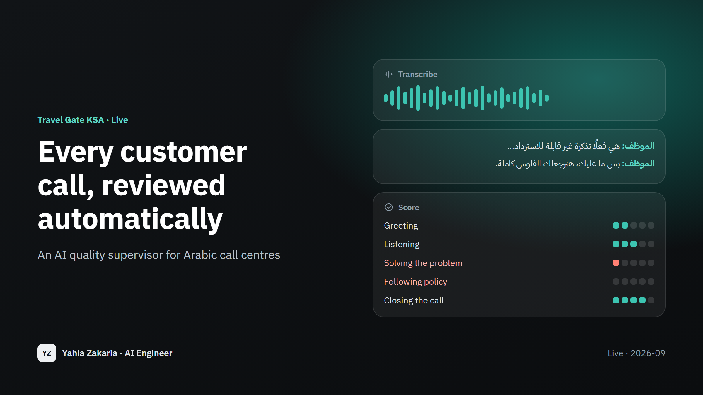

Every customer call, reviewed automatically
An AI quality supervisor for Arabic call centres — it listens to every call, scores it against your checklist, and shows the evidence.
- Client
- Travel Gate KSA · Travel agency · Saudi Arabia
- My role
- Designed and built the whole system, from recordings to reports.

2% → 100%
of calls reviewed
before → after
830+
calls transcribed in production
1,790
calls and chats in one place
< 1¢
cost to analyse one conversation
about $0.008
The problem
In most call centres, quality control means a supervisor listening to a handful of calls — about 2 in every 100, picked at random. The other 98 are never heard. A promise that breaks company policy, a customer who hung up angry, an agent who needs coaching: none of it shows up unless the supervisor happens to pick that exact call. And when feedback does happen, it is one person's impression against another's.
How it works
Step 1 / 5
Collect
Every night, call recordings from the phone system and chats from the CRM are gathered into one place — no one has to export anything.
Step 2 / 5
Transcribe
A speech model built for Arabic turns each call into text. It copes with Gulf and Egyptian dialects, formal Arabic, and English words dropped in mid-sentence.
Step 3 / 5
Score
The AI scores the agent on the same five things a good supervisor checks — greeting, listening, solving the problem, following policy, closing — from 0 to 5.
Step 4 / 5
Show the evidence
Every score quotes the sentence it is based on. An agent can see exactly why, and a supervisor can check any score in seconds.
Step 5 / 5
Report
One report per call, plus a team summary that ranks the weakest skill first — that is next week's training plan.
Results in production
Travel Gate, September 2026
- Live since September 2026. It runs by itself every night at 11:30 pm Riyadh time.
- More than 830 calls transcribed and 1,790 calls and chats brought together in one database, each linked to its customer.
- Analysing a conversation costs less than one cent. A quiet night with nothing new to process costs almost nothing.
- Recordings that contain no real speech are recognised and set aside, so an empty call never drags an agent's average down.
Try it — six sample calls
These six calls are made up — I wrote them to cover the situations a supervisor cares about — but the scores are the system's real, unedited output. Pick a call to see its scorecard.
Umrah package booking
Confirms what the customer needs, offers two options, explains the deposit rule, asks if there's anything else.
- Why they called
- حجز باقة عمرة لشخصين في العشر الأواخر من رمضان بفندق قريب من الحرم
- Customer mood
- Positive
- Resolved
- Yes
- Sent to a supervisor
- No review needed
The calls are in Arabic, so the evidence quotes are too.
-
Greeting 5/5
الموظف: "السلام عليكم ورحمة الله، معك خالد من خدمة العملاء، أسعد الله مساك، كيف أقدر أخدمك؟" — تحية كاملة مع تعريف بالاسم والقسم وسؤال عن الخدمة.
-
Listening 5/5
لخّص الطلب للتأكد: "عشان أفهم طلبك صح: شخصين، حضرتك والوالدة، العشر الأواخر من رمضان، صح؟" واستجاب لتفضيل الفندق القريب من الحرم.
-
Solving the problem 5/5
قدّم خيارين محددين بالأسعار والمسافات، وأكد توفّر كرسي متحرك مجانًا وتسجيل ملاحظة في الحجز، ثم أكمل الحجز المبدئي برقم TG-5520.
-
Following policy 4/5
أوضح سياسة الشركة: "الحجز يتأكد بعربون ثلاثين في المئة، والباقي قبل السفر بأسبوعين" دون أن يَعِد بأي استثناءات مخالفة.
-
Closing the call 5/5
سأل: "هل فيه أي شي ثاني أقدر أساعدك فيه؟" ثم أنهى بلطف: "الله يتقبل منكم ويوصلكم بالسلامة. مع السلامة."
What went well
- تحية افتتاحية مهنية كاملة تضمنت الاسم والقسم
- تلخيص الطلب للتأكد من الفهم قبل تقديم الحل
- تقديم خيارين واضحين مع الأسعار والمسافات لتمكين العميل من القرار
- الالتزام باحتياج العميل الخاص (كرسي متحرك) وتسجيله في الحجز
- الشفافية في شرح سياسة العربون والدفع
What to improve
- تأكيد بيانات التواصل مع العميل (رقم الجوال أو البريد) قبل إرسال رابط الدفع لضمان وصوله
- ذكر مدة صلاحية الحجز المبدئي TG-5520 والموعد النهائي لدفع العربون بشكل صريح
- عرض بديل احتياطي في حال عدم توفّر الكرسي المتحرك أو الغرف القريبة في تلك الفترة
Read the call
الموظف: السلام عليكم ورحمة الله، معك خالد من خدمة العملاء، أسعد الله مساك، كيف أقدر أخدمك؟
العميل: وعليكم السلام، مساك الله بالخير. أبغى باقة عمرة لي ولأمي في رمضان، العشر الأواخر إذا أمكن.
الموظف: الله يتقبل منكم. عشان أفهم طلبك صح: شخصين، حضرتك والوالدة، العشر الأواخر من رمضان، صح؟ وفي أي تفضيل للفندق؟
العميل: صح. أبغى فندق قريب من الحرم لأن أمي كبيرة وما تقدر تمشي كثير.
الموظف: فاهم عليك تمامًا. عندي خيارين: الأول فندق على بعد مئة متر من ساحة الحرم، سبع ليالي بثمانية آلاف وخمسمية ريال للشخصين شامل الإفطار. والثاني على بعد أربعمية متر بستة آلاف ومية، مع توصيل مجاني للحرم كل ساعة.
العميل: الأول أحسن عشان أمي. هل فيه كرسي متحرك؟
الموظف: أيوه، الفندق يوفر كرسي متحرك مجانًا، وبسجل ملاحظة في الحجز عشان يكون جاهز أول ما توصلون. وحسب سياسة الشركة، الحجز يتأكد بعربون ثلاثين في المية، والباقي قبل السفر بأسبوعين.
العميل: ممتاز، اعتمد الخيار الأول.
الموظف: تم الحجز المبدئي برقم TG-5520، وبيوصلك رابط الدفع ورسالة فيها كل التفاصيل خلال دقائق. هل فيه أي شي ثاني أقدر أساعدك فيه؟
العميل: لا، جزاك الله خير، ما قصرت.
الموظف: وإياك، الله يتقبل منكم ويوصلكم بالسلامة. مع السلامة.
Changing a flight date
A clean, correct change — but the agent never checks if there's anything else.
- Why they called
- الاستفسار عن إمكانية تغيير تاريخ الرحلة وتنفيذ التغيير
- Customer mood
- Positive
- Resolved
- Yes
- Sent to a supervisor
- No review needed
The calls are in Arabic, so the evidence quotes are too.
-
Greeting 5/5
«أهلًا وسهلًا معك أحمد من خدمة عملاء الشركة، كيف أقدر أساعدك؟» — ترحيب واضح مع ذكر الاسم والقسم.
-
Listening 4/5
ترك العميل يشرح طلبه كاملًا ثم طلب رقم الحجز وراجعه، لكنه لم يلخّص المشكلة أو يؤكد الفهم بصياغة مثل «إذن حضرتك عايز تغيّر تاريخ الرحلة».
-
Solving the problem 5/5
قدّم حلًا فعليًا ونفّذ التغيير: «تم التغيير ليوم 23. هيوصلك إيميل تأكيد خلال دقائق»، ورد على استفسار السعر: «لا، مفيش أي فرق».
-
Following policy 5/5
التزم بشروط التذكرة بدقة: «بتسمح بتغيير التاريخ مرة واحدة من غير رسوم لو التغيير قبل الرحلة بـ 48 ساعة على الأقل» ولم يَعِد بأي استثناء مخالف.
-
Closing the call 3/5
أنهى بلطف «العفو، مع السلامة» لكنه لم يسأل إن كان هناك استفسار آخر قبل الإنهاء.
What went well
- ترحيب مهني واضح يتضمن الاسم والقسم
- معرفة دقيقة بشروط التذكرة وتطبيقها بشكل صحيح
- حل عملي وفوري: نفّذ التغيير فعليًا بدل الاكتفاء بالوعد
- وضوح في الخطوات التالية (إيميل التأكيد) وفي الرد على استفسار السعر
What to improve
- إضافة خطوة تلخيص للمشكلة قبل الحل، مثل: «إذن حضرتك عايز تغيّر تاريخ رحلتك من 15 لـ22، صح؟» للتأكد من الفهم
- عرض بدائل بشكل أوسع عند عدم توفر يوم 22، مثل السؤال عن مرونة العميل في التواريخ أو خط سير بديل
- إنهاء المكالمة بسؤال صريح: «هل فيه أي حاجة تانية أقدر أساعدك فيها؟» قبل السلام
- تأكيد بيانات التواصل مع العميل (البريد المسجل) عند الوعد بإرسال إيميل التأكيد
Read the call
الموظف: أهلًا وسهلًا معك أحمد من خدمة عملاء الشركة، كيف أقدر أساعدك؟
العميل: السلام عليكم، أنا حاجز رحلة الأسبوع الجاي وعايز أعرف أقدر أغيّر التاريخ ولا لأ.
الموظف: أكيد، ممكن رقم الحجز لو سمحت؟
العميل: تمام، الرقم TG-4471.
الموظف: لحظة واحدة بس أراجع الحجز... طيب حضرتك حاجز تذكرة اقتصادي مرن، ودي بتسمح بتغيير التاريخ مرة واحدة من غير رسوم لو التغيير قبل الرحلة بـ 48 ساعة على الأقل.
العميل: يعني أقدر أغيّرها دلوقتي؟
الموظف: أيوة، رحلتك بعد ستة أيام فإنت داخل المدة المسموحة. تحب أغيّرها لتاريخ إيه؟
العميل: خليها يوم 22 بدل 15 لو ينفع.
الموظف: للأسف يوم 22 مفيهوش مقاعد متاحة على نفس خط السير. أقرب تاريخ متاح هو 23 أو 24.
العميل: طب خليها 23 يبقى.
الموظف: تمام، تم التغيير ليوم 23. هيوصلك إيميل تأكيد خلال دقائق على نفس البريد المسجل.
العميل: طيب هل فيه أي فرق في السعر؟
الموظف: لا، مفيش أي فرق، التغيير الأول مجاني حسب شروط التذكرة.
العميل: تمام شكرًا.
الموظف: العفو، مع السلامة.
Wrong hotel room
Arabic and English mixed; tonight can't be fixed, so the agent asks the hotel for compensation.
- Why they called
- شكوى عدم مطابقة الغرفة لنوع الحجز (sea view) في فندق بإسطنبول
- Customer mood
- Negative
- Resolved
- No
- Sent to a supervisor
- Yes
The calls are in Arabic, so the evidence quotes are too.
-
Greeting 4/5
"Good evening، معك ريم من خدمة العملاء، تفضلي." — تحية وافتتاح مهني مع ذكر الاسم والقسم، لكن دون ذكر اسم الشركة أو عرض المساعدة بشكل كامل.
-
Listening 5/5
تركت العميلة تشرح المشكلة كاملة، ثم لخّصت: "خليني أتأكد: حضرتك حاجزة sea view من خلالنا، ورقم الحجز كام؟" وطلبت رقم الحجز للتحقق.
-
Solving the problem 3/5
قدّمت خطة واضحة: "هكلّم الفندق حالًا وأطلب upgrade أو نقل لغرفة sea view من بكرة، ولو مش متاح هطلب تعويض عن فرق السعر"، لكنها لم تُحل المشكلة فعليًا واكتفت بالوعد بالرد خلال ساعة، ولم توضّح للعميلة خطواتها البديلة إن رفض الفندق التعويض.
-
Following policy 4/5
ربطت التعويض بشروط الحجز: "هطلب تعويض عن فرق السعر حسب شروط الحجز"، ولم تَعِد بما يخالف السياسة، وامتنعت عن الوعد بتغيير غرفة الليلة لأن "الفندق full فعلًا".
-
Closing the call 4/5
"هرجعلك برسالة واتساب خلال ساعة بالرد النهائي. في أي حاجة تانية؟" ثم "العفو، أتمنالك إقامة سعيدة." — تأكدت من عدم وجود استفسار آخر وأنهت بلطف، مع غياب رقم مرجعي أو قناة تواصل بديلة.
What went well
- افتتاح مهني مع ذكر الاسم والقسم وتحية مناسبة للوقت
- إنصات كامل ولخّصت المشكلة وطلبت رقم الحجز للتحقق قبل أي إجراء
- خطة حل واضحة ومتدرجة: upgrade أو نقل من الغد ثم تعويض عن فرق السعر
- التزمت بشروط الحجز ولم تَعِد بما لا تستطيع تنفيذه (تغيير غرفة الليلة)
- حدّدت إطارًا زمنيًا للرد (خلال ساعة) عبر قناة واضحة (واتساب)
What to improve
- إضافة اسم الشركة في الافتتاح: "معك ريم من خدمة عملاء [اسم الشركة]"
- توضيح الخطوة التالية للعميلة بشكل ملموس: متى بالضبط ستتواصل مع الفندق، وماذا سيحدث إن رفض التعويض، وما البديل المتاح (نقل لفندق آخر مثلًا)
- تقديم تعويض فوري أو إجراء مؤقت لليلة الحالية بدل تركها دون أي حل: "سأرسل لك تأكيدًا مكتوبًا بالتعويض عن الليلة الأولى"
- تزويد العميلة برقم مرجعي للشكوى أو رقم تواصل مباشر بدل الاعتماد على واتساب فقط
- إبلاغ العميلة بإجراء تصعيدي واضح إن لم يستجب الفندق خلال المدة المحددة
Read the call
الموظف: Good evening، معك ريم من خدمة العملاء، تفضلي.
العميل: هاي ريم. أنا حاليًا في الفندق بإسطنبول، عملت check-in من ساعة، والغرفة مش زي اللي في الـ booking. كنت حاجزة sea view وأعطوني غرفة على الشارع.
الموظف: آسفة جدًا على الإزعاج. خليني أتأكد: حضرتك حاجزة sea view من خلالنا، ورقم الحجز كام؟
العميل: TG-3307.
الموظف: تمام، الحجز عندي فعلًا sea view لأربع ليالي. الفندق أكّد لك سبب التغيير؟
العميل: قالوا الفندق full ومفيش غرف sea view الليلة.
الموظف: فاهمة. هكلّم الفندق حالًا وأطلب upgrade أو نقل لغرفة sea view من بكرة، ولو مش متاح هطلب تعويض عن فرق السعر حسب شروط الحجز.
العميل: طيب والليلة دي؟
الموظف: الليلة للأسف مش هقدر أوعدك بتغيير لأن الفندق full فعلًا، بس هطلب منهم تعويض عن الليلة دي كمان.
العميل: أوكي، هستنى.
الموظف: هرجعلك برسالة واتساب خلال ساعة بالرد النهائي. في أي حاجة تانية؟
العميل: لا، thanks.
الموظف: العفو، أتمنالك إقامة سعيدة.
Visa question
The agent doesn't know the fees or the document list and promises a call back — with no time given.
- Why they called
- استفسار عن استخراج تأشيرة شنغن سياحية لإيطاليا والأوراق والرسوم
- Customer mood
- Neutral
- Resolved
- No
- Sent to a supervisor
- Yes
The calls are in Arabic, so the evidence quotes are too.
-
Greeting 5/5
"أهلًا وسهلًا، معك سارة من خدمة العملاء، كيف أقدر أساعدك؟" — تحية كاملة مع ذكر الاسم والقسم وعرض المساعدة.
-
Listening 3/5
طرحت أسئلة توضيحية جيدة ("سياحة ولا زيارة عائلية؟"، "كم المدة المتبقية قبل السفر؟") لكنها لم تلخّص المشكلة أو تؤكد فهمها، ولم تُكمل سماع بقية استفسارات العميل عن الأوراق والرسوم.
-
Solving the problem 1/5
لم تقدّم حلًا واضحًا: قالت "مواعيد السفارة هالفترة زحمة ومش متأكدة إذا خمس أسابيع تكفي"، وعن الأوراق "أظن خطاب من جهة العمل، بس خليني أتأكد"، وعن الرسوم "ما عندي الرقم الحين، بتأكد وأرجع لك" — وعود مؤجلة دون أي معلومة مؤكدة.
-
Following policy 2/5
لم تُخالف سياسة صريحة، لكنها قدّمت معلومات غير مؤكدة عن الأوراق المطلوبة ("وأظن خطاب من جهة العمل") ووعدت بالعودة دون التزام موعد محدد ("بكلمك إن شاء الله")، وهو وعد غير منضبط.
-
Closing the call 0/5
أنهت المكالمة بـ"باي" فقط دون التأكد من وجود استفسار آخر ودون تلخيص أو شكر أو توجيه لخطوة تالية.
What went well
- افتتاحية مهنية كاملة: تحية، تعريف بالاسم والقسم، وعرض المساعدة
- طرح أسئلة توضيحية لتصنيف الطلب (نوع التأشيرة ومدة الرحلة)
What to improve
- تحديد موعد دقيق للعودة بالعميل بدل "بكلمك إن شاء الله"، مثل: "سأعاود الاتصال بك اليوم قبل الساعة الخامسة"
- التحقق من قائمة الأوراق والرسوم قبل المكالمة أو استخدام مصدر موثوق بدل التخمين بـ"أظن"
- تقديم بديل عملي لمشكلة ضيق الوقت، مثل تحديد أقرب موعد متاح أو تحويل العميل لقسم التأشيرات المختص
- إنهاء المكالمة بسؤال "هل هناك أي استفسار آخر؟" مع الشكر وتلخيص الخطوة التالية
- تلخيص طلب العميل في نهاية الحديث للتأكد من فهمه بالكامل
Read the call
الموظف: أهلًا وسهلًا، معك سارة من خدمة العملاء، كيف أقدر أساعدك؟
العميل: أهلين سارة، أنا ناوي أسافر إيطاليا الشهر الجاي مع زوجتي، وأبغى أعرف إذا تطلعون لنا الفيزا.
الموظف: أكيد نقدر نساعدك في الشنغن. حضرتك تبغى سياحة ولا زيارة عائلية؟
العميل: سياحة، عشرة أيام تقريبًا.
الموظف: تمام. وكم المدة المتبقية قبل السفر بالضبط؟
العميل: تقريبًا خمس أسابيع.
الموظف: الصراحة مواعيد السفارة هالفترة زحمة ومش متأكدة إذا خمس أسابيع تكفي ولا لا.
العميل: طيب والأوراق المطلوبة إيش؟
الموظف: جواز سفر، كشف حساب، حجز فندق وطيران، وأظن خطاب من جهة العمل، بس خليني أتأكد من القائمة الكاملة.
العميل: طيب والرسوم كم؟
الموظف: والله ما عندي الرقم الحين، بتأكد وأرجع لك.
العميل: متى ترجعين لي؟
الموظف: بكلمك إن شاء الله.
العميل: طيب.
الموظف: باي.
Refund request
The agent says the ticket is non-refundable, then promises a full refund anyway.
- Why they called
- طلب إلغاء تذكرة سفر واسترداد المبلغ كاملًا
- Customer mood
- Positive
- Resolved
- No
- Sent to a supervisor
- Yes
The calls are in Arabic, so the evidence quotes are too.
-
Greeting 2/5
قال فقط: "مساء الخير، خدمة العملاء، تفضل" دون ذكر اسمه أو أي ترحيب مهني إضافي.
-
Listening 3/5
سأل عن رقم الحجز واستفسر عن سبب الإلغاء ("حضرتك ليه حابب تلغي؟")، لكنه لم يلخّص المشكلة أو يؤكد فهمه لطلب الاسترداد الكامل.
-
Solving the problem 1/5
اكتفى بالوعد: "أنا هرفع الطلب وهنرجعلك الفلوس كاملة، خلال أسبوع بالكتير" دون تقديم حل نظامي أو توضيح إجراءات بديلة.
-
Following policy 0/5
أقرّ بأن التذكرة "اقتصادي لايت وغير قابلة للاسترداد" ثم وعد بالاسترداد الكامل، وهو وعد مخالف لسياسة الشركة المعلنة.
-
Closing the call 4/5
سأل "في أي خدمة تانية؟" وأنهى بـ"مع السلامة" بعد تأكيد العميل عدم وجود استفسار آخر.
What went well
- افتتح المكالمة بتحية مناسبة وذكر القسم ("مساء الخير، خدمة العملاء")
- طلب رقم الحجز مباشرة للوصول إلى بيانات العميل
- استفسر عن سبب الإلغاء لإظهار الاهتمام
- أنهى المكالمة بالسؤال عن وجود خدمة أخرى
What to improve
- عدم تقديم وعود مخالفة للسياسة: كان يجب توضيح أن التذكرة اقتصادي لايت غير قابلة للاسترداد والاعتذار عن الاسترداد الكامل بدلًا من تأكيده
- عرض بدائل نظامية بدل الوعد المطلق، مثل إمكانية تغيير التاريخ أو استرداد الرسوم القابلة للاسترداد فقط، أو تحويل الطلب للجهة المختصة
- الاعتذار عن عدم ذكر الاسم عند الافتتاح وذكر اسمه وقسمه بشكل واضح
- تلخيص طلب العميل (إلغاء + استرداد كامل) قبل الانتقال للحل للتأكد من الفهم
- تجنّب عبارات التأكيد الشخصي مثل "اعتمد عليا" عند عدم وجود صلاحية مؤكدة، واستخدام صياغة مهنية واضحة حول الخطوات التالية
Read the call
الموظف: مساء الخير، خدمة العملاء، تفضل.
العميل: مساء النور. أنا حاجز تذكرة للرياض–دبي يوم الخميس وأبغى ألغيها وأسترد فلوسي كاملة.
الموظف: طيب، رقم الحجز؟
العميل: TG-8812.
الموظف: لحظة... إيه، التذكرة موجودة. حضرتك ليه حابب تلغي؟
العميل: ظرف عائلي، ما أقدر أسافر. وأنا دافع ألف وثلاثمية ريال وأبغاها كاملة.
الموظف: تمام، ولا يهمك، هنرجعلك المبلغ كامل إن شاء الله.
العميل: متأكد؟ لأن واحد قالي إن التذكرة ذي ما تنسترد.
الموظف: هي فعلًا تذكرة اقتصادي لايت وغير قابلة للاسترداد، بس ما عليك، أنا هرفع الطلب وهنرجعلك الفلوس كاملة، خلال أسبوع بالكتير.
العميل: طيب ممتاز، يعني أعتمد على كلامك؟
الموظف: أيوه اعتمد عليا.
العميل: خلاص تمام، مشكور.
الموظف: العفو، في أي خدمة تانية؟
العميل: لا شكرًا.
الموظف: مع السلامة.
Lost suitcase
The agent interrupts, blames the airline, takes no details and gives no follow-up time.
- Why they called
- عدم وصول الحقيبة بعد الرحلة ومتابعة بلاغ العفش
- Customer mood
- Negative
- Resolved
- No
- Sent to a supervisor
- Yes
The calls are in Arabic, so the evidence quotes are too.
-
Greeting 0/5
افتتح الموظف بـ«ألو، نعم» فقط، دون سلام أو تعريف بنفسه أو باسم الشركة.
-
Listening 1/5
قاطع العميل مرتين («أيوه بس إحنا مالناش علاقة بالعفش» و«طيب طيب») قبل أن يكمل شرحه، ولم يلخّص المشكلة أو يتأكد من فهمها.
-
Solving the problem 1/5
اكتفى بوعد غامض: «أنا هبلّغ القسم المختص وهم يكلموك»، وعند سؤاله عن الموعد قال «ما أقدر أحدد، على حسب القسم» دون رقم بلاغ أو إجراء واضح.
-
Following policy 1/5
رفض المسؤولية بشكل قاطع («إحنا مالناش علاقة بالعفش») رغم أن العميل حجز من الشركة، ولم يوجّهه لإجراء رسمي لتسجيل بلاغ العفش.
-
Closing the call 0/5
لم يسأل إن كان هناك استفسار آخر ولم يقدّم أي صيغة إنهاء لائقة؛ انتهت المكالمة بعبارة «استنى اتصالهم».
What went well
- سأل عن رقم البلاغ («عندك رقم البلاغ؟») في محاولة لجمع معلومة أساسية للمتابعة.
What to improve
- الافتتاح: ابدأ بتحية واضحة وتعريف مهني، مثل «السلام عليكم، معك [الاسم] من خدمة عملاء [الشركة]، كيف أقدر أساعدك؟» بدلًا من «ألو، نعم».
- الإنصات: اترك العميل يكمل دون مقاطعة، ثم لخّص المشكلة بصيغة تأكيدية: «إذا فهمت صح، حضرتك وصلت أمس وحقيبتك لم تصل ولم يتم تسجيل بلاغ — صح؟».
- الحل: بدل إحالة غامضة، سجّل بلاغًا فوريًا واعطِ العميل رقم البلاغ ومدة المعالجة المتوقعة، واشرح الخطوات التالية بوضوح.
- الالتزام بالسياسة: لا تنفِ المسؤولية بعبارة «مالناش علاقة»؛ اشرح حدود دور الشركة والإجراء الصحيح لتسجيل بلاغ العفش ومتابعته نيابة عن العميل.
- التصعيد: عند طلب العميل التحدث مع مسؤول، لا تكتفِ بـ«المسؤول مش موجود»؛ اعرض تسجيل طلب معاودة اتصال من مشرف مع تحديد إطار زمني.
- الإغلاق: اختم بسؤال «هل فيه أي شي ثاني أقدر أساعدك فيه؟» وتأكيد الخطوات التالية قبل إنهاء المكالمة.
Read the call
الموظف: ألو، نعم.
العميل: السلام عليكم، أنا وصلت من القاهرة أمس وشنطتي ما وصلت، ولي يومين أتصل وما أحد يرد!
الموظف: الشنط دي مسؤولية شركة الطيران مش إحنا يا فندم.
العميل: بس أنا حاجز من عندكم، وأنتم قلتوا لي كلموا خدمة العملاء عندنا لو صار أي شي!
الموظف: أيوه بس إحنا مالناش علاقة بالعفش، لازم تروح مكتب...
العميل: لحظة خليني أكمل، أنا رحت المطار وقالوا لي قدّم بلاغ عن طريق الوكالة اللي حجزت منها.
الموظف: طيب طيب، عندك رقم البلاغ؟
العميل: ما عطوني رقم، عشان كذا أتصل عليكم.
الموظف: خلاص أنا هبلّغ القسم المختص وهم يكلموك.
العميل: متى؟ فيها أغراض شغل وأحتاجها بكرة.
الموظف: ما أقدر أحدد، على حسب القسم.
العميل: هذا ما يرضيني أبدًا، أبغى أكلم المسؤول.
الموظف: المسؤول مش موجود دلوقتي.
العميل: يعني أسوي إيش أنا الحين؟
الموظف: استنى اتصالهم.
The team summary
Average score for each skill across the six calls, weakest first. The top of this list is next week's training.
6
calls scored
60%
average score
4
sent to a supervisor
Show as a table
| Skill | Average (out of 5) |
|---|---|
| Solving the problem | 2.67 |
| Following policy | 2.67 |
| Closing the call | 2.67 |
| Greeting | 3.5 |
| Listening | 3.5 |
How this can help your business
Hear every call, not 2%
Nothing slips through because nobody happened to pick that call.
Fair, consistent feedback
Every agent is judged on the same checklist, and every score shows its proof.
Catch costly promises early
Calls that break policy are flagged the next morning, before the customer comes back to collect.
Train on what matters
See which skill the whole team is weakest at, instead of guessing.
Know why customers call
Call reasons and customer mood, counted across thousands of calls.
Low running cost
Under a cent per conversation, and the speech model is open-source — no per-minute fees.
Call centres, travel agencies, clinics, online stores, banks — any team that takes calls in Arabic.
Good to know
- Transcripts are not word-perfect — in noisy dialect calls roughly one word in four can be off. That is fine for judging how an agent behaved, not for quoting in a legal dispute.
- Before using the scores in performance reviews, a supervisor should score around 50 calls by hand so we can check that the AI agrees with them.
- When the phone system records both voices on one track, the AI works out who is speaking from context. Recording each side separately makes that exact.
Images
Technical detailsFor engineers and recruiters
- Cohere Transcribe Arabic
- DeepSeek
- LangChain
- Pydantic
- FastAPI
- n8n
- PostgreSQL
- Modal (serverless GPU)
- Railway
- Docker
- Speech-to-text: an open-source 2-billion-parameter Arabic model (Cohere Transcribe Arabic) running on a serverless GPU that only switches on when there is work.
- Scoring: two independent AI passes — one reads the customer's side, one grades the agent — with structured output, so every score arrives with its evidence in a fixed shape.
- Plumbing: n8n schedules the work, a tested Python service does the transcription and the maths, and PostgreSQL (25 tables) holds every customer, call and score.
- The open-source version on GitHub runs the same scoring on your own recordings or transcripts, with 13 automated tests.
Let's talk about your project
Tell me what you're trying to fix or find out. I'll reply with a clear plan: the steps, the timeline, and what it would cost to run.